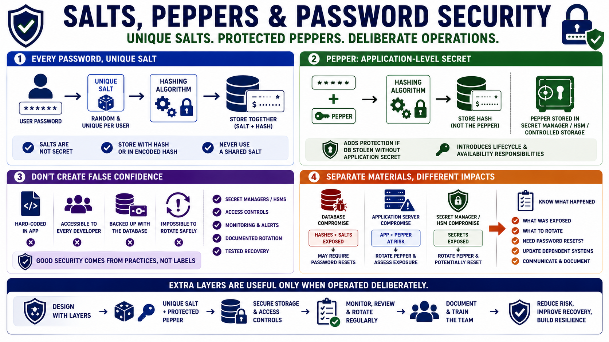

Salts, Peppers, and Secret Management
Connecting to LMS... Progress: in progress

Narration
Every password should have a unique salt. The salt should be generated with a suitable random source and stored with the password hash or inside the algorithm's encoded hash format. Salt storage is not a secret management problem because salts are expected to be available for verification. The operational requirement is that salts are unique, correctly generated, and not replaced with a single shared value.
A pepper is different. At a high level, a pepper is an application-level secret used in addition to per-password salts. Because it is secret, it belongs in a secret manager, HSM-backed design, or another controlled storage mechanism rather than in the database beside the hashes. A pepper can add a layer of protection when the database is stolen without the application secret, but it also introduces lifecycle and availability responsibilities.
Peppers should not create false confidence. If the pepper is hard-coded in the application, broadly accessible to every developer, stored in the same backup set as the database, or impossible to rotate safely, the extra layer may be weaker than it appears. Secret managers, HSMs, access controls, monitoring, and documented rotation procedures matter more than the label attached to the design.
Separating password hashes from application secrets helps incident response. A database compromise, application server compromise, and secret manager compromise have different implications. Teams should know which materials were exposed, what needs to be rotated, whether password resets are required, and how dependent systems will be updated. Extra layers are useful only when they are operated deliberately.